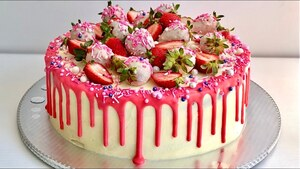

PASTEL DE FRESA

INGREDIENTES
2 1/4 tazas de crema
3 tazas de harina
1/2 tazas de azúcar
1 1/2 cucharaditas de polvo para hornear
1 pizca de sal
2 barras de mantequilla sin sal, cortados en pedazos
2 huevos, batidos
1/2 cucharaditas de vainilla líquida
5 tazas de fresa, rebanadas
3 cucharadas de azúcar glass
Betunes de vainilla
INSTRUCCIONES
Precalienta el horno. En un bowl mezcla el harina, tres cucharadas de azúcar, el polvo para hornear y la pizca de sal. Agrega la mantequilla en pedacitos chiquitos.
PASO 1
Mezcla con un tenedor en un bowl 3/4 de taza de crema, los huevos, la vainilla y la mezcla de la harina. Solo hasta que los ingredientes estén húmedos, no sobre batas.
PASO 2
Agarra la masa y forma un círculo, ponla en una charola para hornear. Agrega 2 cucharadas de crema y esparce una cucharada de azúcar.
PASO 3
Hornea hasta que se vea dorado más o menos por 25 minutos. Deja que se enfríe por completo.
PASO 4
Macera las fresas con el cuarto de taza de azúcar que queda por una hora.
PASO 5
Con una batidora eléctrica bate la crema con el azúcar restante a punto de turrón hasta formar picos. Una vez que el pastel esté completamente frío, partir por en medio a la mitad agrega la crema y las fresas rebanadas. Vuelve a tapar con la otra capa de pastel y en la parte superior poner el betún de vainilla y la mezcla de fresas maceradas.